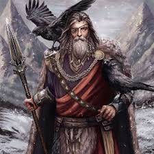
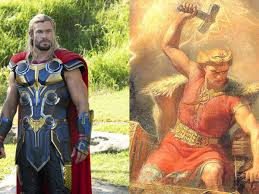
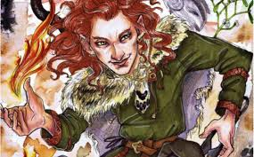

Odín
Odín es el líder de los dioses nórdicos, conocido como el dios de la sabiduría, la guerra y la muerte. Es el padre de Thor y uno de los más importantes de la mitología nórdica.
Thor
Thor es el dios del trueno, hijo de Odín y conocido por su gran fuerza. Su arma, el martillo Mjölnir, tiene el poder de destruir montañas y es capaz de convocar rayos y tormentas.
Thor es un protector de los humanos y los dioses, combatiendo a gigantes y otras criaturas malvadas. Es una de las figuras más populares de la mitología nórdica.
Freyja

Freyja es la diosa del amor, la belleza, la fertilidad y la guerra. Es hermana de Freyr y una de las diosas más veneradas. Freyja tiene un carro tirado por gatos y lleva un collar mágico llamado Brisingamen.
En la mitología, Freyja también es conocida por su papel en la muerte, ya que dirige a los caídos en batalla hacia el campo de Fólkvangr, su propio salón.
Loki
Loki es el dios del engaño y la travesura. Aunque es considerado un dios, en muchas historias es un enemigo de los dioses. Loki tiene la capacidad de cambiar de forma y es responsable de varios eventos importantes, como la muerte de Balder.
A pesar de ser astuto y hábil, Loki es considerado una figura ambigua, ya que su comportamiento lleva a la destrucción durante el Ragnarök, el fin del mundo en la mitología nórdica.